Tilesets
Tilesets add graphics to DF, simple as that. You can still play in ASCII, in a dozen ascii-like sets, which use a similar style but different icons, or with any of 10 different graphical sets. Installation is very straight forward, you simply pick it in the GUI. You need to generate a new world after this.
MDF currently offers 20 tilesets, the previews of which you can see here.Some of the tilesets come with custom creatures sprites and custom color schemes as well, which are automatically installed by the GUI. You can still change the color schemes to any you like. Try it out, they really do make a difference!
Aesomatica
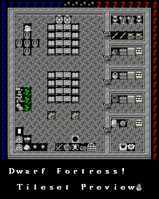
Ascii
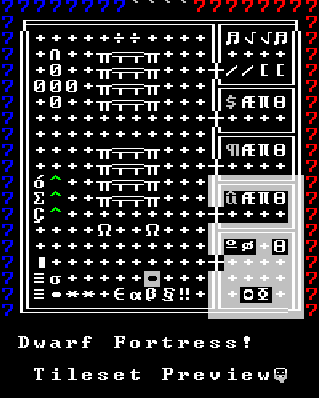
Cheepicus
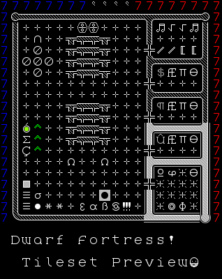
CLA
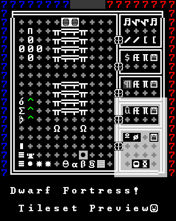
Crazy88
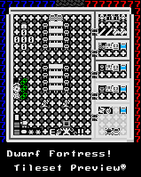
Dawn Fortress
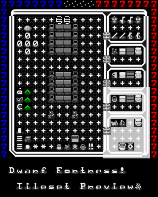
Goofy12
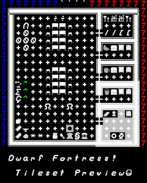
GrimDark
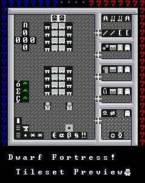
Ironhand
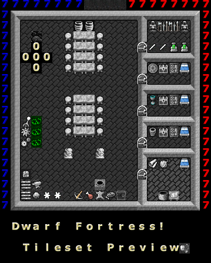
Jolly Bastion
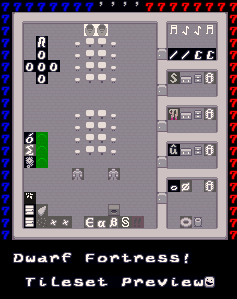
Matrix
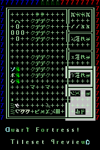
Mayday
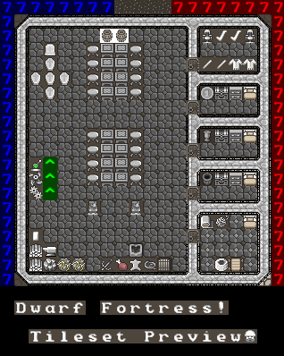
Masterwork DF
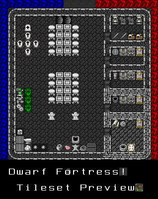
Nordic
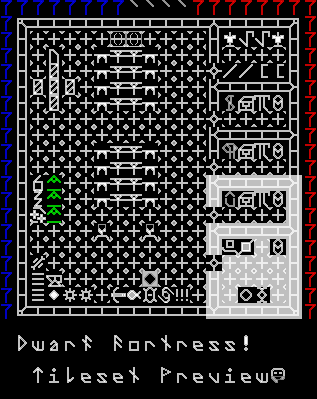
Obsidian Soul
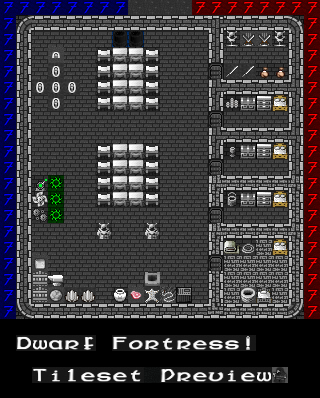
Phoebus
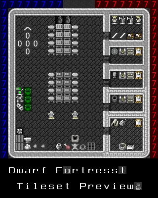
Rogue12
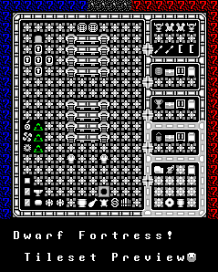
Spacefox
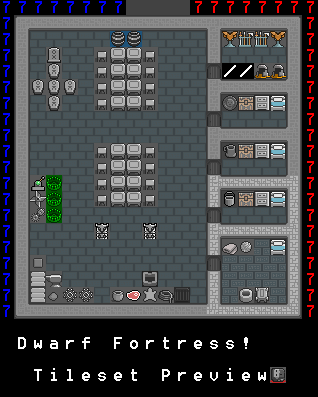
Storyteller Gothic

Taffer
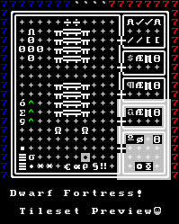
Vherid
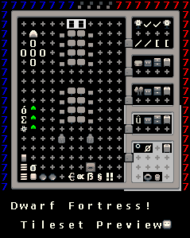